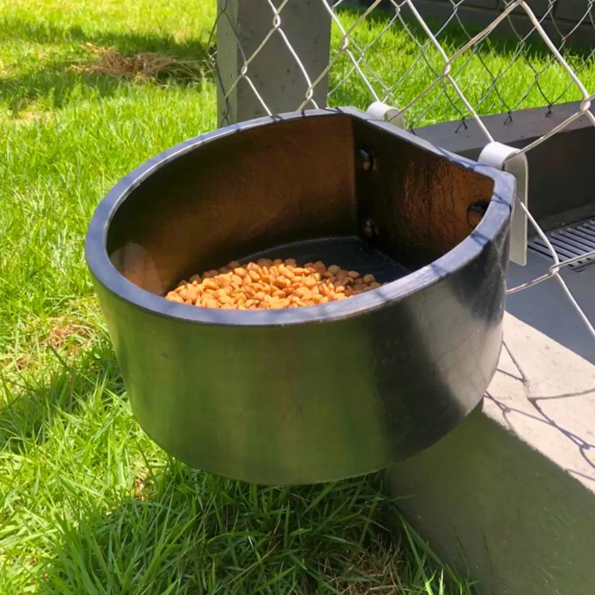
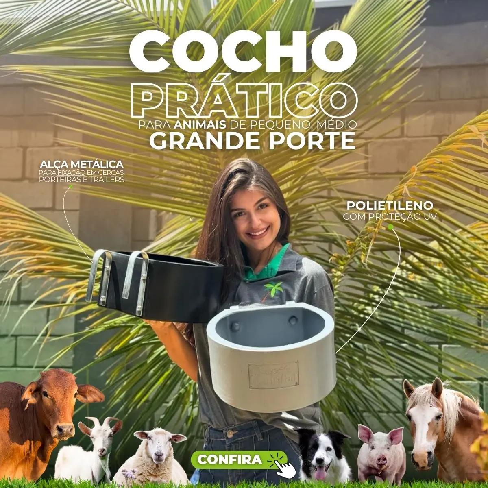
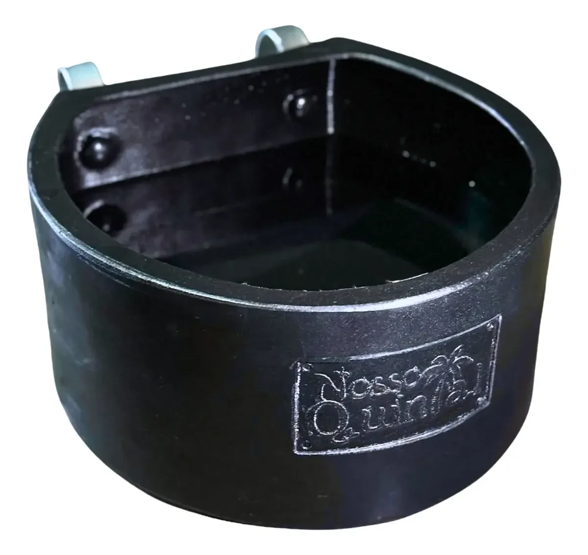
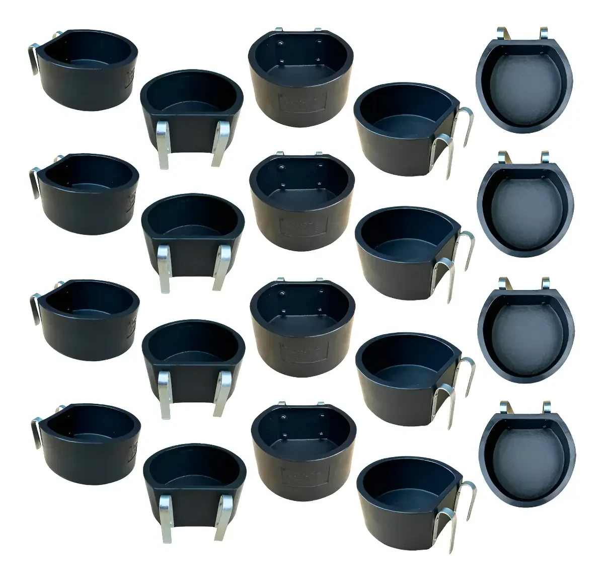

Um comedouro para cachorro bem escolhido resolve um problema que muito tutor só percebe depois: prato virado, água suja no chão e ração espalhada pela casa. O modelo com suporte baia — vendido em kit de 20 unidades com capacidade de 8 litros — promete resolver isso com uma estrutura fixa tipo cocho, pensada originalmente para uso em grande escala (canis, ONGs, pet shops) mas que também serve muito bem para quem tem mais de um cão em casa ou área externa.
Este review analisa o produto anunciado como "comedouro c/ suporte baia 20 un 8 litros - cocho água ração" a partir das fotos e especificações divulgadas pelo vendedor, cruzando com dados de mercado e recomendações veterinárias sobre alimentação canina, para ajudar você a decidir se esse é o comedouro certo para o seu cão. Se você busca uma opção mais compacta, uma alternativa é um comedouro elevado individual, indicado para cães de apartamento.
Resumo rápido
- O Brasil tem cerca de 52,2 milhões de cães domiciliados, segundo estimativa do IBGE reportada pelo CRMV-SP — o que faz do comedouro um item de altíssima recorrência de compra.
- O setor pet brasileiro faturou R$ 77,96 bilhões em 2025, com alta projetada para 2026, segundo a Abinpet.
- Estudo da FMVZ-USP encontrou 40,5% de cães com sobrepeso ou obesidade em amostra de São Paulo — reforçando a importância de comedouros que ajudam a controlar porção e postura alimentar.
- O comedouro com suporte baia é indicado principalmente para quem tem mais de um cão, área externa, canil ou pet shop — não é a melhor escolha para tutores de um único cão de porte pequeno vivendo em apartamento.
8,4/10 — Muito bom custo-benefício para uso em grupo
Resumo em uma linha: Estrutura robusta e prática para alimentar vários cães de uma vez, com ótimo custo por unidade no kit de 20 peças.
Ideal para: Canis, ONGs, pet shops, sítios e tutores com múltiplos cães ou área externa.
Não ideal para: Apartamentos pequenos ou tutor de um único cão de porte pequeno, que não precisa da estrutura em escala.
Onde comprar: Mercado Livre, com frete e condições de pagamento variáveis por vendedor.
O conjunto é formado por um cocho de 8 litros de capacidade encaixado em um suporte metálico tipo baia, feito para ficar fixo em cercas, currais ou estruturas de canil. O kit vem com 20 unidades, o que reduz bastante o custo por comedouro na comparação com a compra avulsa de potes individuais — um ponto forte para quem precisa equipar vários espaços de uma vez.

Diferente de um pote comum apoiado no chão, a fixação no suporte impede que o cão empurre ou vire o recipiente — um problema comum em comedouros soltos, especialmente com cães maiores ou mais agitados na hora da refeição. Vale considerar também um bebedouro automático, para quem quer resolver hidratação e alimentação juntas.
Comedouros fixos e elevados são recomendados por profissionais veterinários porque favorecem uma postura mais anatômica durante a alimentação, reduzindo o esforço do pescoço e o risco de desconforto digestivo — orientação especialmente relevante para cães de porte médio a grande. Também ajudam a manter a água e a ração mais limpas, já que ficam fora do alcance de terra, poeira e contato direto com o chão.
Esse cuidado com a alimentação ganha ainda mais peso diante de um dado da FMVZ-USP: em estudo com 258 cães e 221 tutores na cidade de São Paulo, 14,6% dos animais estavam obesos e 40,5% apresentavam sobrepeso ou obesidade combinados, com associação mais forte em fêmeas castradas (Porsani, FMVZ-USP, 2019). Um comedouro que ajuda a organizar porções e a manter a rotina alimentar é uma ferramenta simples de apoio ao controle de peso — ela não substitui orientação veterinária, mas facilita a disciplina do dia a dia. Para entender melhor os sinais de sobrepeso, vale ficar atento a mudanças na silhueta e na facilidade de sentir as costelas do cão, e consultar um veterinário em caso de dúvida.

Depende do contexto. Para quem mora em apartamento e tem um único cão de porte pequeno, um comedouro elevado individual, sem toda a estrutura de fixação em baia, tende a ser mais prático e ocupar menos espaço. Já para quem tem quintal, sítio, chácara, mais de um cão, ou administra canil, ONG ou pet shop, o kit de 20 unidades com suporte fixo resolve de forma definitiva o problema de comedouros virados, disputa por comida e desperdício de ração — com um custo por unidade muito mais baixo do que comprar potes individuais de qualidade equivalente.
Vale lembrar que 53% dos tutores brasileiros oferecem apenas ração industrializada aos cães e 45% combinam ração com comida caseira, segundo levantamento da Kantar Brasil (Kantar, abril de 2025) — ou seja, na prática, a imensa maioria dos lares brasileiros usa comedouro com ração seca no dia a dia, cenário em que a estrutura fixa e a limpeza facilitada do suporte baia fazem diferença real na rotina. Para quem administra um canil ou abrigo, vale organizar a alimentação de múltiplos cães com comedouros individuais identificados e horários fixos de refeição.
| Prós | Contras |
|---|---|
| Kit com 20 unidades reduz muito o custo por comedouro | Estrutura pensada para uso em escala — exagerada para tutor de um único cão pequeno |
| Suporte fixo evita que o cão vire o comedouro | Exige instalação em cerca, curral ou estrutura semelhante |
| 8 litros de capacidade reduz frequência de reabastecimento | Não é a opção mais discreta esteticamente para ambientes internos |
| Facilita a limpeza por manter ração e água longe do chão | Frete pode pesar no custo total dependendo da região |
| Ótimo custo-benefício para canis, ONGs e pet shops | Variações de qualidade entre vendedores no Mercado Livre — confira avaliações antes de comprar |

Esta análise foi construída a partir das fotos e especificações reais do anúncio do produto, comparadas com critérios técnicos usados por veterinários para avaliar comedouros (altura, fixação, capacidade, material) e com dados de mercado sobre o setor pet e alimentação canina no Brasil. Não se trata de um teste laboratorial do material — recomendamos sempre conferir as avaliações de outros compradores no próprio anúncio antes de fechar a compra, já que a qualidade de fabricação pode variar entre vendedores. Veja nossa política editorial e de afiliados para entender como avaliamos e selecionamos produtos.
Para quem tem mais de um cão, área externa ou administra um espaço com vários animais, sim — o custo por unidade no kit de 20 peças, somado à praticidade do suporte fixo, torna esse comedouro uma das opções mais eficientes do mercado para esse perfil de uso. Para tutor de cão único em apartamento, vale considerar um comedouro elevado individual mais compacto.
🐾 Cansado de comedouro virado, ração espalhada e água suja no chão? O kit com suporte baia resolve isso de uma vez — e com o preço por unidade mais baixo do que comprar potes avulsos. As unidades costumam esgotar rápido nas promoções do Mercado Livre.
Ver preço e disponibilidade no Mercado Livre →Link de afiliado: podemos receber uma comissão por compras feitas através deste link, sem custo adicional para você.
Sim, mas ele é mais indicado para cães de porte médio a grande ou para quem alimenta vários cães ao mesmo tempo. Para um cão pequeno sozinho, um comedouro elevado individual costuma ser mais adequado ao espaço.
Sim. O suporte é fixado em uma estrutura como cerca, curral ou grade — não é um comedouro de chão pronto para uso imediato dentro de casa.
A oferta analisada é vendida como kit fechado, o que reduz o custo por unidade. Confira no anúncio do Mercado Livre se o vendedor oferece opção de quantidade menor.
Ele não substitui orientação veterinária, mas ajuda a organizar porções e manter uma rotina alimentar mais controlada, o que é um fator de apoio relevante já que estudos apontam prevalência alta de sobrepeso em cães no Brasil.
O comedouro para cachorro com suporte baia é uma solução robusta e econômica para quem precisa alimentar vários cães com praticidade, higiene e sem o transtorno de comedouros virados. Se o seu cenário é canil, ONG, sítio, pet shop ou casa com mais de um cão, esse kit de 20 unidades com 8 litros de capacidade cada tende a se pagar rápido pela durabilidade e pelo custo por unidade. Vale conferir o anúncio atual para preço, frete e avaliações antes de decidir.
🐶 Garanta o comedouro que vai acabar com a bagunça na hora da refeição do seu cão — confira agora o preço atual no Mercado Livre.
Quero ver o comedouro no Mercado Livre →Link de afiliado: podemos receber uma comissão por compras feitas através deste link, sem custo adicional para você.
Nildo Alves — curadoria de produtos pet no Smart Pet Gadgets. Testa e pesquisa produtos para cães e gatos, cruzando especificações de fabricante com boas práticas veterinárias e dados de mercado.
Sobre o Smart Pet Gadgets · Contato · Política editorial e de afiliados